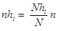

Muestreo Aleatorio Simple Estratificado:
Consiste en dividir toda la poblacion objeto de estudio en diferentes subgrupos o estratos disjuntos,
los cuales son homogeneos con respecto a una determinada caracteristica, de manera que un individuo solo puede pertenecer a un estrato.
Una vez definidos los estratos, para crear la muestra se seleccionan individuos empleando una tecnica de muestreo cualquiera
a cada uno de los estratos por separado (Ochoa, 2015f).
Se utiliza la siguiente expresion definida por Calero (1978):

nhi: tamanno de la muestra del estrato h.
Nhi: tamanno de la poblacion del estrato h.
N: tamanno de la poblacion total.
n: tamanno de la muestra de la poblacion N.